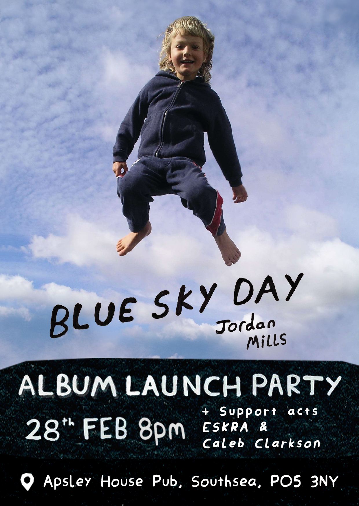

Jordan Mills has been writing and performing his own music
for the past ten years as well as performing a wide range of popular covers.
With a sound rooted in indie-pop and folk,
Jordan's music often draws from personal stories and relatable experiences.
He has just released his new album 'Blue Sky Day'.
Getting to know: Jordan Mills - babystep article 26 July 2024
"Jordan is a very talented singer/songwriter, reminds me of early Ed Sheeran."
UPCOMING GIGS 2025:
Hosting an open mic every Thursday at
The Bold Forester, Southsea (7pm - 10:30pm)
27 February - The Barley Mow, Southsea (Thursday 8:30pm)
28 February - Blue Sky Day ALBUM LAUNCH PARTY Apsley House, Southsea (Friday 8pm)
21 March - The Painters Arms, Portsmouth (Friday)
22 March - Apsley House, Southsea (Saturday 9pm)
19 April - Apsley House, Southsea (Saturday 9pm)
2 May - The Lord Raglan, Emsworth (Friday 8:30pm)
10 May - Apsley House, Southsea (Saturday 9pm)
14 June - Apsley House, Southsea (Saturday 9pm)
11 July - The Lord Raglan, Emsworth (Friday 8:30pm)
12 July - Apsley House, Southsea (Saturday 9pm)
2 August - Apsley House, Southsea (Saturday 9pm)
6 September - Apsley House, Southsea (Saturday 9pm)
